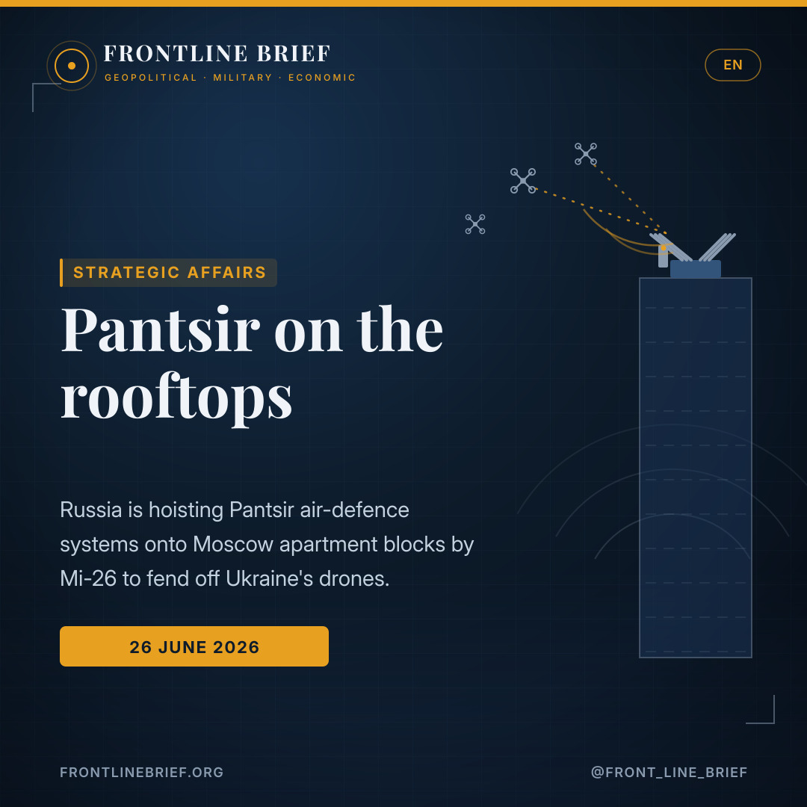
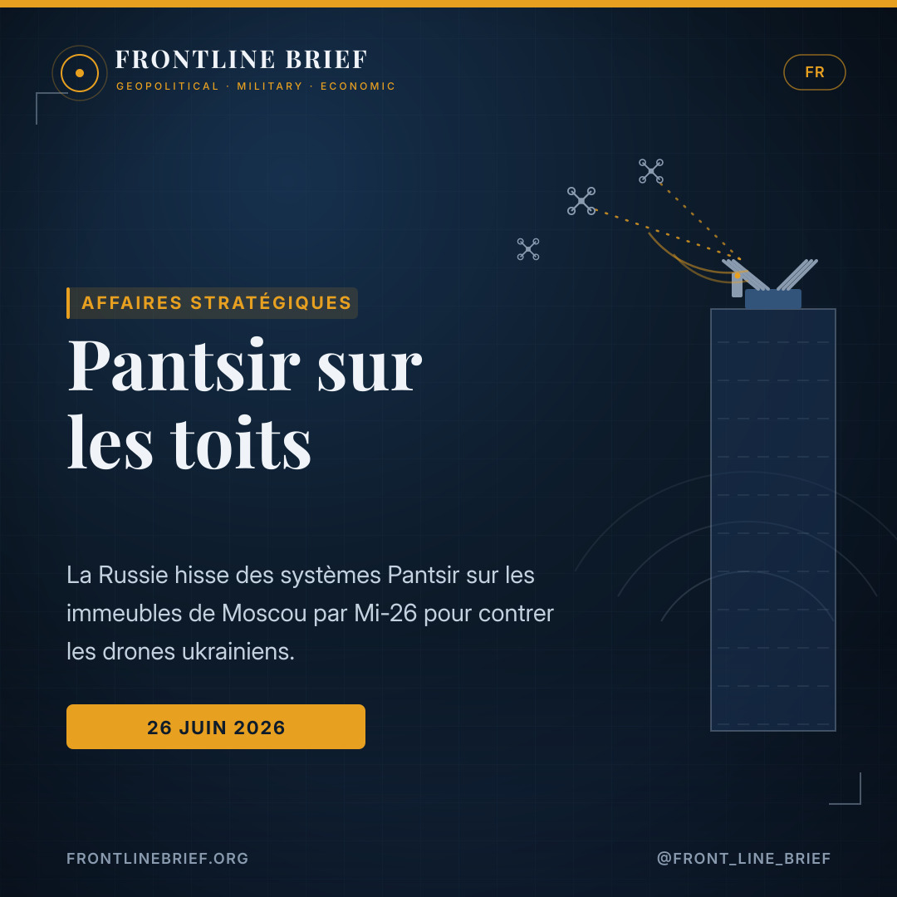
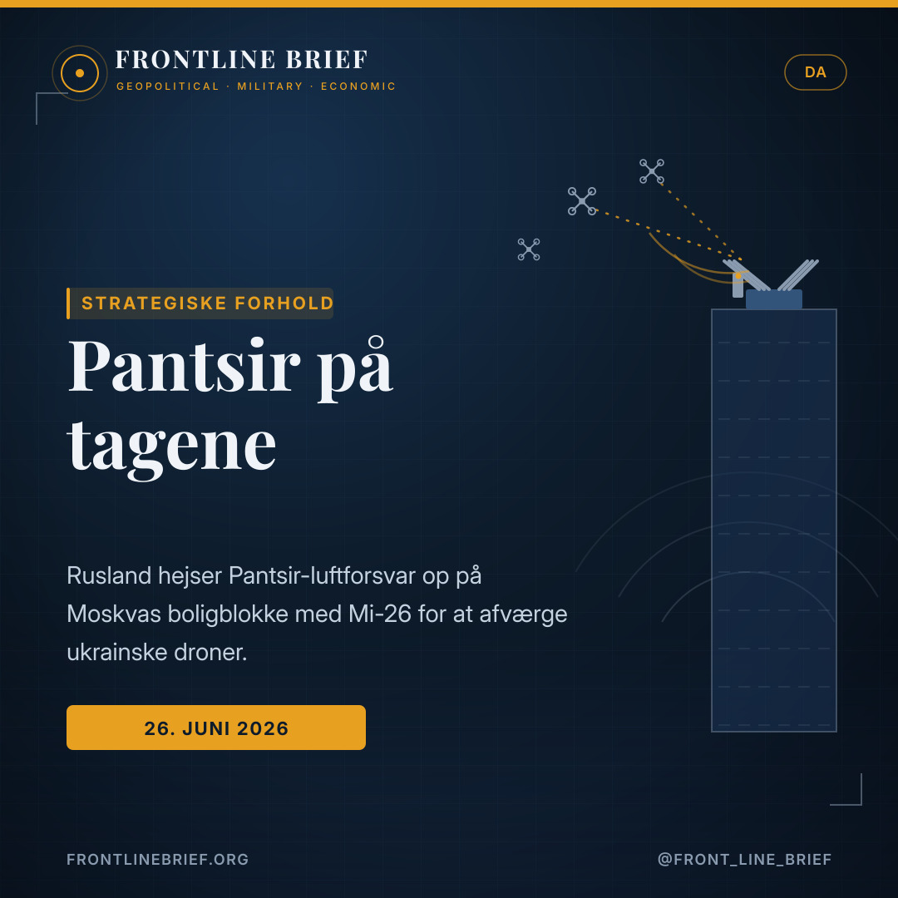
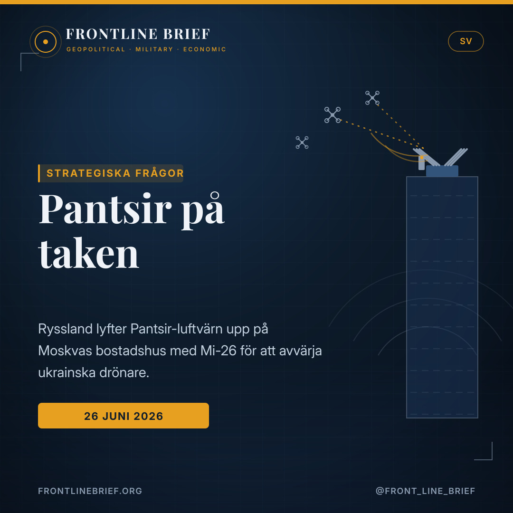

Moscow goes vertical: Russia bolts Pantsir launchers onto apartment rooftops against Ukraine's drones
As Ukrainian drones reach ever deeper into the Russian capital, Moscow is lifting Pantsir air-defence systems by heavy helicopter onto the roofs of residential tower blocks. It is a vivid sign of how far the war has come home — and a move with as much to do with optics as with interception.




SAMs above the flats
Russia is placing Pantsir systems on the roofs of multi-storey Moscow apartment blocks, lifted into position by Mi-26 helicopters. Footage from the Chertanovo Severnoye district shows the practice, reported on an almost daily basis.
The war reaches the capital
Recent Ukrainian drone raids on Moscow — including the region's largest refinery and the Dubna satellite-communications centre — have alarmed the authorities. Zelensky has publicly cited the rooftop deployments.
A shield, and a narrative
The aim looks twofold: defend the city, and be able to argue that any strike near the launchers hits "residential areas". Yet the 18 June oil-tank blast was later attributed, most likely, to Russian air-defence fire.
Air defence on the roof
The images are striking even by the standards of this war: a Pantsir short-range air-defence system, slung beneath a heavy Mi-26 helicopter, being lowered onto the roof of a residential tower block in Moscow. According to footage circulating on social media, Russian forces have been installing the systems on high-rise apartment buildings in the city's Chertanovo Severnoye district, and reports of similar moves around the capital now arrive almost daily.
Why Moscow is scrambling
The trigger is the steady deepening of Ukraine's long-range drone campaign. Recent raids have struck the largest oil refinery in the wider Moscow region and the satellite-communications centre at Dubna, jolting the Russian authorities into visible action. President Volodymyr Zelensky has himself pointed to the rooftop deployments, citing the picture his security services are assembling. Putting interceptors on tall buildings buys altitude and a clearer field of fire over a sprawling city — the logic of a capital that no longer feels out of reach.
Bolting missile launchers to the roofs of apartment blocks is what it looks like when a capital that once felt untouchable starts feeling the war.
A defensive measure — and a messaging one
Russia's calculation appears to run on two tracks. The first is straightforward: thicken the air-defence net over Moscow against the dozens of drones now probing it. The second is narrative. By siting launchers on residential blocks, the Kremlin positions itself to argue that any Ukrainian strike against them lands on "residential areas" rather than military targets — a framing aimed at domestic and international audiences alike. Placing weapons among civilians is a choice with its own legal and moral weight.
When the shield misfires
The catch is that a denser air-defence umbrella over a crowded city carries its own risks. The spectacular explosion that tore part of an oil tank into the air on 18 June 2026 — footage that travelled the world — was later attributed, in all likelihood, to Russian air-defence fire rather than a Ukrainian weapon. Interceptors that miss, or whose debris falls back to earth, can do real damage in a dense urban environment, and rooftop batteries do not change that arithmetic.
The bigger picture
For most of the war Moscow projected an air of normality, insulated from the front by hundreds of kilometres. The sight of Pantsir batteries being craned onto apartment roofs punctures that image. It will not, on its own, stop a determined drone campaign — air defence rarely offers a hermetic seal — but as a signal it is hard to miss: the war the Kremlin launched is now being fought, visibly, above the heads of Muscovites.
Αντιαεροπορική άμυνα στην ταράτσα
Οι εικόνες είναι εντυπωσιακές ακόμη και με τα μέτρα αυτού του πολέμου: ένα σύστημα μικρού βεληνεκούς Pantsir, κρεμασμένο κάτω από βαρύ ελικόπτερο Mi-26, να κατεβαίνει στην οροφή πολυώροφης πολυκατοικίας στη Μόσχα. Σύμφωνα με βίντεο που κυκλοφορεί στα μέσα κοινωνικής δικτύωσης, ρωσικές δυνάμεις τοποθετούν τα συστήματα σε ψηλά κτίρια κατοικιών στη συνοικία Τσερτάνοβο Σεβέρνογιε της πόλης, ενώ αναφορές για ανάλογες κινήσεις γύρω από την πρωτεύουσα φτάνουν πλέον σχεδόν καθημερινά.
Γιατί τρέχει η Μόσχα
Η αφορμή είναι η σταθερή διείσδυση της ουκρανικής εκστρατείας drones μεγάλου βεληνεκούς. Πρόσφατες επιδρομές έπληξαν το μεγαλύτερο διυλιστήριο της ευρύτερης περιοχής της Μόσχας και το κέντρο δορυφορικών επικοινωνιών στην Ντούμπνα, αναγκάζοντας τις ρωσικές αρχές σε ορατή αντίδραση. Ο ίδιος ο Βολοντίμιρ Ζελένσκι έχει αναφερθεί στις τοποθετήσεις στις ταράτσες, επικαλούμενος την εικόνα που συγκεντρώνουν οι υπηρεσίες ασφαλείας του. Τα αναχαιτιστικά σε ψηλά κτίρια κερδίζουν ύψος και καθαρότερο πεδίο βολής πάνω από μια απέραντη πόλη — η λογική μιας πρωτεύουσας που δεν νιώθει πια απρόσιτη.
Το να βιδώνεις εκτοξευτές πυραύλων στις ταράτσες πολυκατοικιών είναι η εικόνα μιας πρωτεύουσας που, ενώ κάποτε ένιωθε άτρωτη, αρχίζει να νιώθει τον πόλεμο.
Ένα αμυντικό μέτρο — και ένα μήνυμα
Ο υπολογισμός της Ρωσίας φαίνεται να κινείται σε δύο άξονες. Ο πρώτος είναι απλός: να πυκνώσει το αντιαεροπορικό δίχτυ πάνω από τη Μόσχα απέναντι στα δεκάδες drones που τη δοκιμάζουν. Ο δεύτερος είναι αφηγηματικός. Τοποθετώντας εκτοξευτές σε κτίρια κατοικιών, το Κρεμλίνο προετοιμάζει το έδαφος ώστε να ισχυριστεί ότι κάθε ουκρανικό πλήγμα εναντίον τους χτυπά «κατοικημένες περιοχές» και όχι στρατιωτικούς στόχους — μια αφήγηση που απευθύνεται τόσο στο εσωτερικό όσο και στο διεθνές κοινό. Η τοποθέτηση όπλων ανάμεσα σε αμάχους είναι επιλογή με το δικό της νομικό και ηθικό βάρος.
Όταν η ασπίδα αστοχεί
Το πρόβλημα είναι ότι μια πυκνότερη αντιαεροπορική ομπρέλα πάνω από μια πυκνοκατοικημένη πόλη φέρνει τους δικούς της κινδύνους. Η εντυπωσιακή έκρηξη που τίναξε τμήμα δεξαμενής πετρελαίου στον αέρα στις 18 Ιουνίου 2026 — πλάνα που έκαναν τον γύρο του κόσμου — αποδόθηκε εκ των υστέρων, κατά πάσα πιθανότητα, σε ρωσικά αντιαεροπορικά πυρά και όχι σε ουκρανικό όπλο. Αναχαιτιστικά που αστοχούν, ή των οποίων τα συντρίμμια πέφτουν στο έδαφος, μπορούν να προκαλέσουν πραγματικές ζημιές σε πυκνό αστικό περιβάλλον — και οι συστοιχίες στις ταράτσες δεν αλλάζουν αυτή την αριθμητική.
Η ευρύτερη εικόνα
Για το μεγαλύτερο μέρος του πολέμου, η Μόσχα προέβαλλε μια αίσθηση κανονικότητας, προστατευμένη από το μέτωπο με εκατοντάδες χιλιόμετρα. Η εικόνα συστοιχιών Pantsir να ανεβαίνουν με γερανό σε ταράτσες πολυκατοικιών διαρρηγνύει αυτή την εικόνα. Δεν θα σταματήσει από μόνη της μια αποφασισμένη εκστρατεία drones — η αντιαεροπορική άμυνα σπάνια προσφέρει στεγανή κάλυψη — αλλά ως μήνυμα είναι δύσκολο να αγνοηθεί: ο πόλεμος που εξαπέλυσε το Κρεμλίνο διεξάγεται πλέον, ορατά, πάνω από τα κεφάλια των Μοσχοβιτών.
La défense antiaérienne sur le toit
Les images sont saisissantes, même à l'aune de cette guerre : un système de courte portée Pantsir, suspendu sous un lourd hélicoptère Mi-26, descendu sur le toit d'une tour résidentielle de Moscou. Selon des vidéos diffusées sur les réseaux sociaux, les forces russes installent ces systèmes sur des immeubles d'habitation du district de Tchertanovo Severnoïe, et les signalements de manœuvres similaires autour de la capitale se multiplient désormais presque chaque jour.
Pourquoi Moscou s'agite
Le déclencheur est l'approfondissement constant de la campagne de drones à longue portée de l'Ukraine. De récentes frappes ont visé la plus grande raffinerie de la région élargie de Moscou et le centre de communications par satellite de Doubna, poussant les autorités russes à une réaction visible. Volodymyr Zelensky a lui-même évoqué ces déploiements sur les toits, s'appuyant sur le tableau que dressent ses services de sécurité. Placer des intercepteurs en hauteur, c'est gagner de l'altitude et un champ de tir plus dégagé sur une ville tentaculaire — la logique d'une capitale qui ne se sent plus hors d'atteinte.
Boulonner des lanceurs de missiles sur les toits d'immeubles, c'est l'image d'une capitale longtemps jugée intouchable qui commence à sentir la guerre.
Une mesure défensive — et un message
Le calcul russe semble suivre deux voies. La première est limpide : densifier le filet antiaérien au-dessus de Moscou face aux dizaines de drones qui la sondent. La seconde relève du récit. En installant des lanceurs sur des immeubles d'habitation, le Kremlin se ménage la possibilité d'affirmer que toute frappe ukrainienne contre eux touche des « zones résidentielles » et non des cibles militaires — une mise en scène destinée autant à l'opinion intérieure qu'internationale. Placer des armes parmi les civils est un choix qui porte son propre poids juridique et moral.
Quand le bouclier se retourne
Le hic, c'est qu'un parapluie antiaérien plus dense au-dessus d'une ville dense comporte ses propres risques. La spectaculaire explosion qui a projeté en l'air une partie d'un réservoir de pétrole le 18 juin 2026 — des images qui ont fait le tour du monde — a été attribuée par la suite, selon toute vraisemblance, à un tir de la défense antiaérienne russe plutôt qu'à une arme ukrainienne. Des intercepteurs qui manquent leur cible, ou dont les débris retombent, peuvent causer de réels dégâts en milieu urbain dense — et les batteries sur les toits ne changent rien à cette arithmétique.
Le tableau d'ensemble
Pendant l'essentiel de la guerre, Moscou a affiché un air de normalité, à l'abri du front par des centaines de kilomètres. Le spectacle de batteries Pantsir hissées sur des toits d'immeubles fissure cette image. À lui seul, il n'arrêtera pas une campagne de drones déterminée — la défense antiaérienne n'offre presque jamais une étanchéité parfaite — mais comme signal, il est difficile à ignorer : la guerre déclenchée par le Kremlin se livre désormais, visiblement, au-dessus de la tête des Moscovites.
Luftforsvar på taget
Billederne er slående selv efter denne krigs målestok: et Pantsir-luftforsvarssystem med kort rækkevidde, hængende under en tung Mi-26-helikopter, sænket ned på taget af en beboelseshøjhus i Moskva. Ifølge optagelser, der cirkulerer på sociale medier, installerer russiske styrker systemerne på beboelsesejendomme i bydelen Tjertanovo Severnoje, og meldinger om lignende træk omkring hovedstaden kommer nu næsten dagligt.
Hvorfor Moskva skynder sig
Udløseren er den stadige uddybning af Ukraines langtrækkende dronekampagne. Nylige angreb har ramt det største raffinaderi i Moskva-regionen og satellitkommunikationscentret i Dubna og tvunget de russiske myndigheder til en synlig reaktion. Volodymyr Zelenskyj har selv peget på tagudstationeringerne med henvisning til det billede, hans sikkerhedstjenester samler. At placere afskydere højt oppe giver højde og et friere skudfelt over en vidtstrakt by — logikken hos en hovedstad, der ikke længere føler sig uden for rækkevidde.
At bolte missilaffyrere fast på taget af boligblokke er billedet af en hovedstad, der engang føltes urørlig, og nu mærker krigen.
En forsvarsforanstaltning — og et budskab
Ruslands beregning ser ud til at køre ad to spor. Det første er ligetil: at fortætte luftforsvarsnettet over Moskva mod de snesevis af droner, der nu sonderer det. Det andet er fortælling. Ved at placere affyrere på beboelsesejendomme skaffer Kreml sig mulighed for at hævde, at ethvert ukrainsk angreb på dem rammer »beboelsesområder« og ikke militære mål — en iscenesættelse rettet mod både det indenrigske og det internationale publikum. At placere våben blandt civile er et valg med sin egen juridiske og moralske vægt.
Når skjoldet rammer forkert
Hagen er, at en tættere luftforsvarsparaply over en tætpakket by bærer sine egne risici. Den spektakulære eksplosion, der den 18. juni 2026 sprængte en del af en olietank op i luften — optagelser, der gik verden rundt — blev senere efter al sandsynlighed tilskrevet russisk luftforsvarsild snarere end et ukrainsk våben. Afskydere, der rammer ved siden af, eller hvis vragdele falder ned, kan gøre reel skade i et tæt bymiljø — og batterier på tagene ændrer ikke det regnestykke.
Det store billede
I størstedelen af krigen udstrålede Moskva en følelse af normalitet, skærmet fra fronten af hundredvis af kilometer. Synet af Pantsir-batterier, der kranes op på boligtage, punkterer det billede. Det stopper ikke i sig selv en målrettet dronekampagne — luftforsvar giver sjældent en hermetisk forsegling — men som signal er det svært at overse: den krig, Kreml udløste, udkæmpes nu, synligt, over hovederne på moskovitterne.
Luftvärn på taket
Bilderna är slående till och med med detta krigs mått: ett Pantsir-luftvärnssystem med kort räckvidd, hängande under en tung Mi-26-helikopter, sänkt ned på taket av ett bostadshöghus i Moskva. Enligt videor som sprids i sociala medier installerar ryska styrkor systemen på bostadshus i stadsdelen Tjertanovo Severnoje, och uppgifter om liknande drag runt huvudstaden kommer nu nästan dagligen.
Varför Moskva skyndar sig
Utlösaren är den ständiga fördjupningen av Ukrainas långräckviddiga drönarkampanj. Nyliga anfall har träffat det största raffinaderiet i Moskvaregionen och satellitkommunikationscentret i Dubna och tvingat de ryska myndigheterna till en synlig reaktion. Volodymyr Zelenskyj har själv pekat på takutplaceringarna med hänvisning till den bild hans säkerhetstjänster samlar in. Att placera robotar högt upp ger höjd och ett friare skjutfält över en vidsträckt stad — logiken hos en huvudstad som inte längre känner sig utom räckhåll.
Att bulta fast robotlavetter på taken till bostadshus är bilden av en huvudstad som en gång kändes oåtkomlig och nu känner kriget.
En försvarsåtgärd — och ett budskap
Rysslands kalkyl tycks löpa på två spår. Det första är enkelt: att förtäta luftvärnsnätet över Moskva mot de tiotals drönare som nu prövar det. Det andra handlar om berättelsen. Genom att placera lavetter på bostadshus skaffar sig Kreml möjligheten att hävda att varje ukrainskt angrepp mot dem träffar ”bostadsområden” och inte militära mål — en iscensättning riktad både till den inhemska och den internationella publiken. Att placera vapen bland civila är ett val med sin egen juridiska och moraliska tyngd.
När skölden slår fel
Haken är att ett tätare luftvärnsparaply över en tätbefolkad stad bär sina egna risker. Den spektakulära explosion som slet upp en del av en oljetank i luften den 18 juni 2026 — bilder som gick världen runt — tillskrevs senare med all sannolikhet rysk luftvärnseld snarare än ett ukrainskt vapen. Robotar som missar, eller vars vrakdelar faller ner, kan göra verklig skada i en tät stadsmiljö — och batterier på taken ändrar inte den matematiken.
Den större bilden
Under större delen av kriget utstrålade Moskva en känsla av normalitet, skyddad från fronten av hundratals kilometer. Synen av Pantsir-batterier som lyfts upp på bostadstak punkterar den bilden. Den stoppar inte i sig en beslutsam drönarkampanj — luftvärn ger sällan en hermetisk försegling — men som signal är den svår att missa: kriget som Kreml inledde utkämpas nu, synligt, över huvudet på moskoviterna.
Sources
- OnAlert.gr — Η Μόσχα «οχυρώνεται» με συστήματα Pantsir σε οροφές κτιρίων (Διονύσης Χατζημιχάλης, 26 June 2026)
- NOELreports / social-media footage — Pantsir installations in Chertanovo Severnoye, Moscow, via Mi-26
- Frontline Brief background — Ukraine's deep drone campaign and the 18 June Moscow refinery strike